Case study / Product design
Beemagojima
Designing a simpler digital insurance experience for Nepal.
Beemagojima evolved from an insurance concept and brand into a connected digital experience spanning discovery, insurance purchase, policy management and claims.
TL;DR
The goal
Make insurance easier to explore, purchase and manage online.
01 / Pricing
Users had to fill in too many fields before seeing a price
Potential customers had to provide 15–20 fields of information just to check an insurance premium. This created a barrier before they could even decide whether to buy.
Before 15–20 fields to see a price
After 3 vehicle details
A simple, one-step premium calculator
I designed a hassle-free calculator that allowed users to estimate their insurance premium by entering just three vehicle details, without logging in or registering. Users could explore the price first and proceed to registration only when they clicked Buy.

02 / Renewal
Renewing or purchasing another policy meant repeating information
Existing customers could face unnecessary effort if they had to repeat the same process or enter their personal details again when renewing a policy or buying insurance for another vehicle or life.
One-click renewal and reusable KYC details
Existing users could renew a policy with one click after logging in. They could also purchase multiple types of insurance, such as motorcycle, car and life insurance, while reusing their existing KYC information and providing only the additional details required.
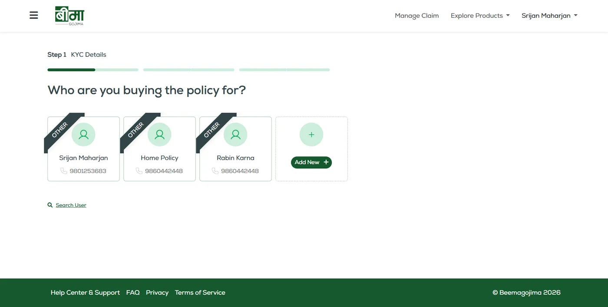
03 / Claims
Insurance claims could feel complicated
Submitting an insurance claim involves providing information and completing several steps. Without a clear structure, the process can feel difficult to navigate.
A guided three-step claim flow
I worked on a three-step claims experience that broke the process into manageable stages, helping users understand what to do next instead of facing the entire process at once.


04 / Admin
Managing customers required a separate administrative experience
The platform needed to support not only customers purchasing insurance but also administrators managing user information.
A dedicated admin dashboard
I contributed to an admin experience with a user management dashboard, giving administrators a dedicated interface for managing customer information separately from the customer-facing portal.
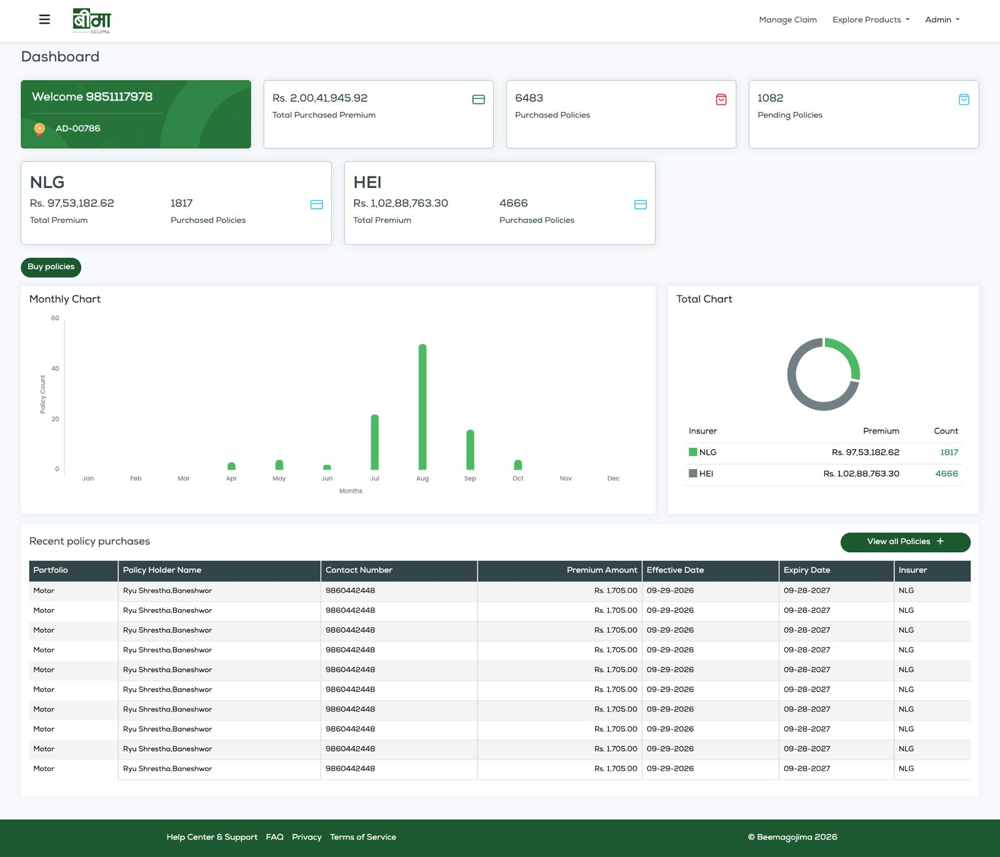
More
Want the full story?
The full case study covers the brand, the website, the purchase flow and the rest of the platform.
Overview
From concept to insurance platform
Beemagojima was never a single interface. It started as a product concept and a brand, became a website and a mobile app, and then grew into a full insurance platform with a customer portal, an admin side and a claims flow.
I was involved across all of it, from the first brand direction to the frontend code.
- 01Concept & BrandMarket study, logo, mascot
- 02Digital LaunchWebsite, mobile app, guidelines, social
- 03Insurance PlatformWeb app, admin, purchase, payment
- 04Claims & IterationThree-step claims, flow improvements
01 / Concept & Brand
Starting with the product itself
The first phase was about the market and the identity. Before any screen existed, the product needed a name people could recognise and a visual foundation to build on.
The brand guidelines explain the idea behind the logo. "Gojima" means "in pocket", so a rectangle stands for the pocket, the Nepali word for Beema is set in type, and the first letter is reversed to sit inside it.
02 / Brand & Digital Launch
Turning the concept into a digital presence
The next phase put the brand into real touchpoints: the website, the mobile app, a redesigned logo and mascot, brand guidelines and social media.
- Brand
- Website
- Mobile app
- Marketing
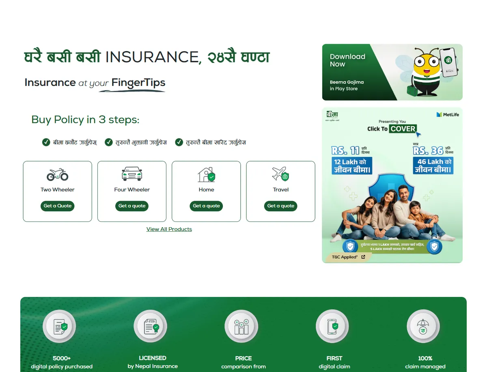
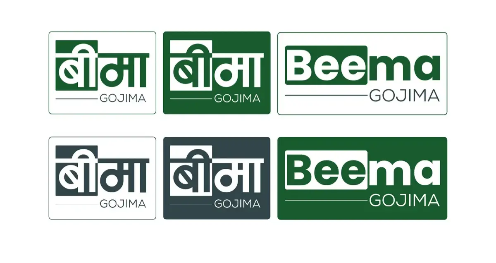
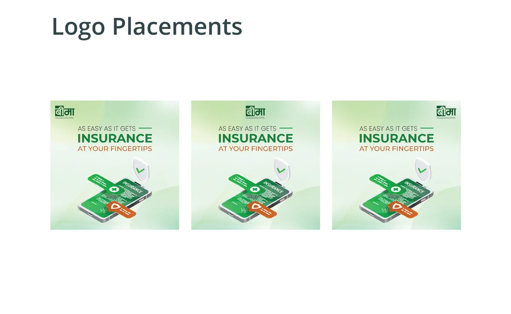
Understanding
Understanding how people approach insurance
Insurance asks a lot of people. They meet unfamiliar terms, compare options, hand over personal information and go through several steps before anything is bought. That is the reason the UX had to reduce complexity.
Make insurance easier to understand
Plans sit side by side with the insurer, the coverage type and the price visible together, so the comparison happens on one screen.
Guide users through complex decisions
Filters for insurer, coverage type, excess and vehicle details narrow the list, and each plan has its own details view.
Reduce unnecessary effort and repetition
Vehicle details already entered stay visible next to the plans, and policyholders already added can be picked again.
Break complex tasks into manageable steps
Purchase runs as a stepped flow with a progress bar, and claims are a three-step journey.
03 / Insurance Platform
Moving from a website to a complete insurance experience
The product then grew beyond the public website into a web application where people could register, choose a policy, pay and manage their insurance. It also needed an admin side for the team running it.
Customer
- Public website
- Registration
- Policy selection
- Purchase
- Payment
- Dashboard
- Claims
Admin
- Admin
- User management
- Insurance / policy management
Registration
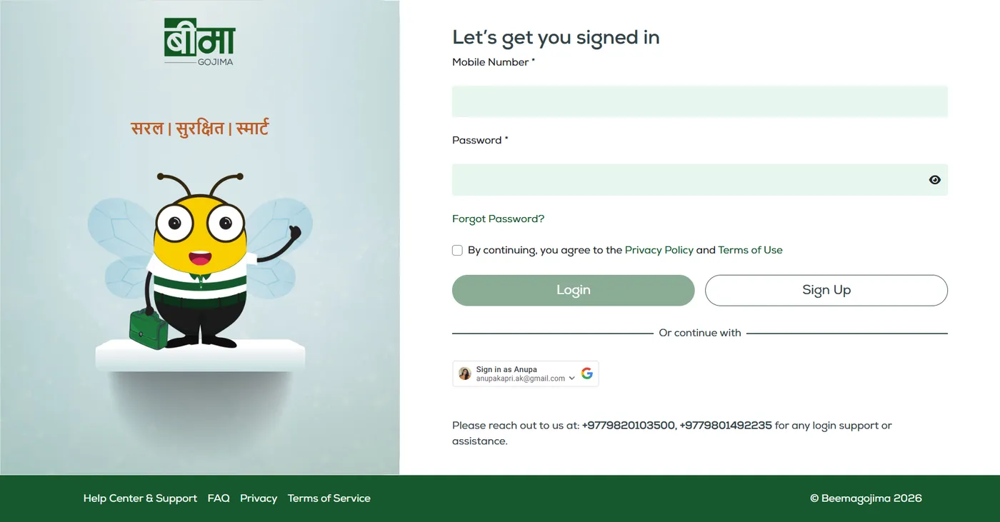
The entry point keeps one job: get the person in. Mobile number and password, a clear split between Login and Sign Up, a Google option, and support numbers for anyone who is stuck.
The mascot and the three-word line carry the brand without taking space from the form.
Choosing a policy
The plans page moves people from understanding the options to picking one. Insurer, coverage type and price are readable at a glance, coverage is shown as short tags, and View Details sits next to Buy Now for anyone who wants more first.
Purchase & payment
The purchase journey
Buying a policy means collecting a lot of information, so the flow had to stay clear while asking for it. Payment is part of the same journey and works as a real transaction, not a mock-up.
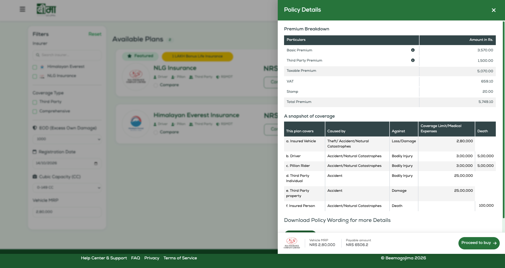
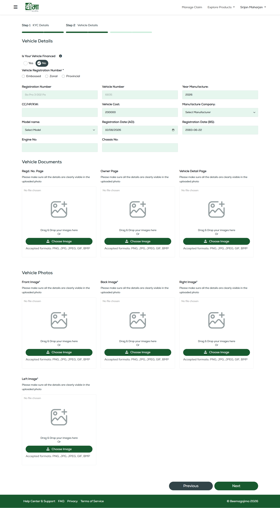
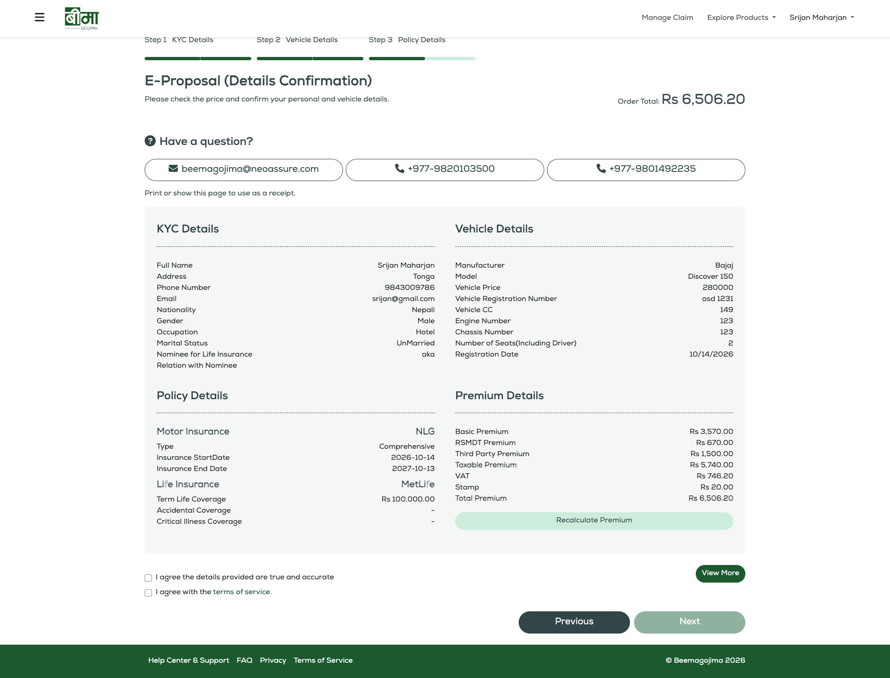
Form friction
Reducing friction in complex forms
Insurance needs a lot of information from the user. In testing and iteration, one source of friction kept coming up: being asked for the same information in different parts of the experience.
The opportunity was not to remove required information. It was to stop asking for what the system already had.
Before
- User enters information
- Moves to another part of the flow
- Asked for the same information again
- More effort
- More friction
After
- User provides information once
- Information is reused where it makes sense
- Fewer unnecessary fields
- A shorter, clearer flow
- Less friction
Good UX is not always about removing steps. Sometimes it is about removing repetition.
Designing around information users had already provided
Reuse was applied across the platform to cut unnecessary fields and effort. Two places where it is visible in the product:
Customer dashboard
A place to manage the policy after buying it
After a purchase, people need one place to understand and manage their insurance. The dashboard brings that together.
- Summary tiles for total premium, purchased policies, pending policies and ongoing claims
- Quick actions: File a Claim, My Claims, My Policies, Expired Policies
- Popular products by vehicle type, as a shortcut to a new quote
- Monthly and total policy charts by insurer
- Recent policy purchases in a table
- A referral form
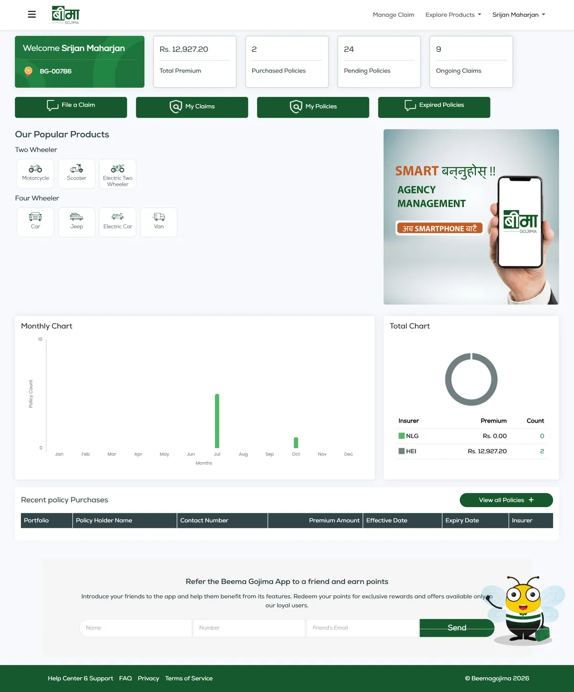
Visual language
The system behind the screens
Colours and typefaces come from the brand guidelines. They are used the same way on the website, the app and the web application.
- #17592E
- #1D743B
- #228D46
- #4EB965
- #C15D28
- #324549
- #727F83
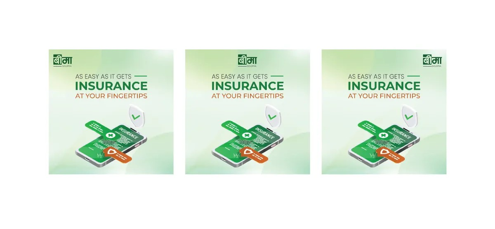
Design to code
From Figma to production
I worked closely with development and also built frontend interfaces in HTML, CSS and JavaScript. That kept the shipped product close to the design, and it taught me how design decisions behave in a browser.
- Figma
- HTML / CSS / JavaScript
- Responsive product
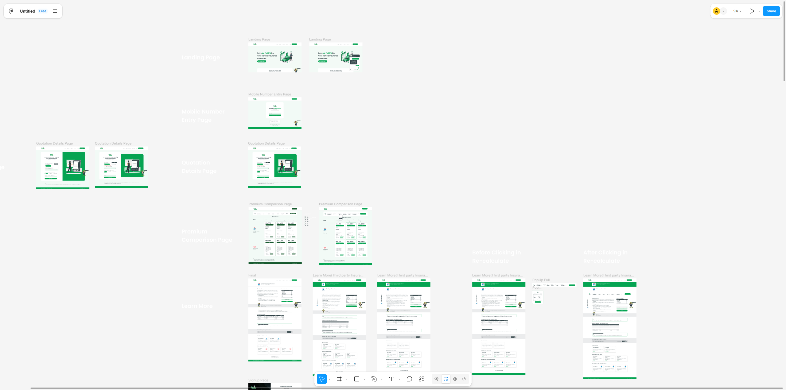
The whole picture
The complete Beemagojima ecosystem
- Concept
- Brand
- Website
- Mobile app
- Customer portal
- Policy purchase
- Payment
- Customer dashboard
- Claims
- Admin experience
- Continuous improvement
Outcome
From an insurance concept to a connected platform
Beemagojima grew from an insurance concept and brand into a connected digital insurance ecosystem covering discovery, purchase, policy management and claims.
My contribution:
- Product and UX design
- Brand development
- Website design
- Mobile experience
- Customer portal
- Admin experience
- Insurance purchase flow
- Payment journey
- Claims flow
- UX iteration
- Frontend implementation
Reflection
What I took from it
Complex products can feel simple. Most of the purchase flow came down to deciding when to ask for each piece of information.
Reusing information removes a lot of friction. It was less work than I expected and made a bigger difference than most visual changes.
Testing shows what static designs hide. Some problems only appeared once people moved through a whole flow.
Design carries on after launch. The product kept changing, and so did my view of what was done.
Writing the frontend changed how I design. Moving between Figma and code made me more careful about states, spacing and what happens on a small screen.
Selected screens
Scroll to flip through · 06 screens
- 01 / 06 · Website home
-
02 / 06 · Instant quote
- 03 / 06 · Plan comparison
- 04 / 06 · Sign in
- 05 / 06 · KYC details
- 06 / 06 · Policy dashboard